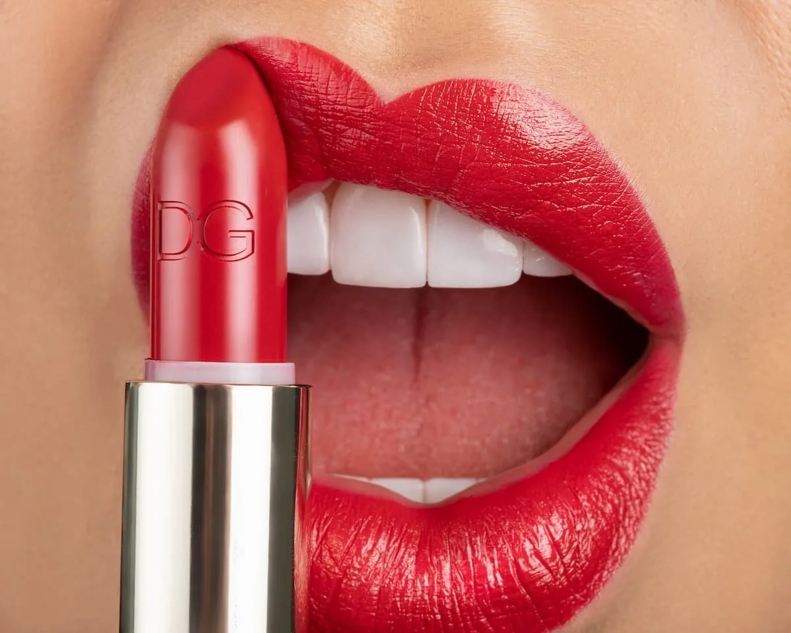
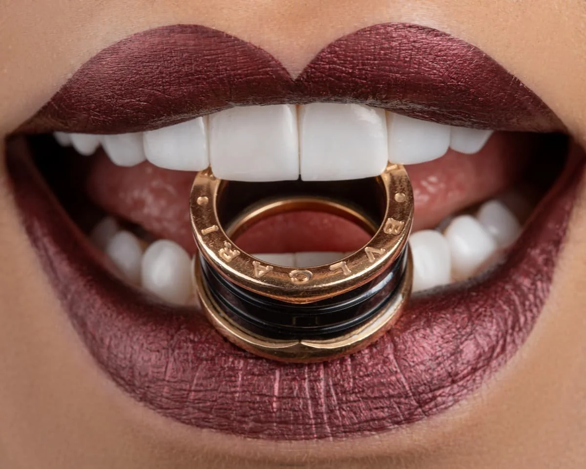
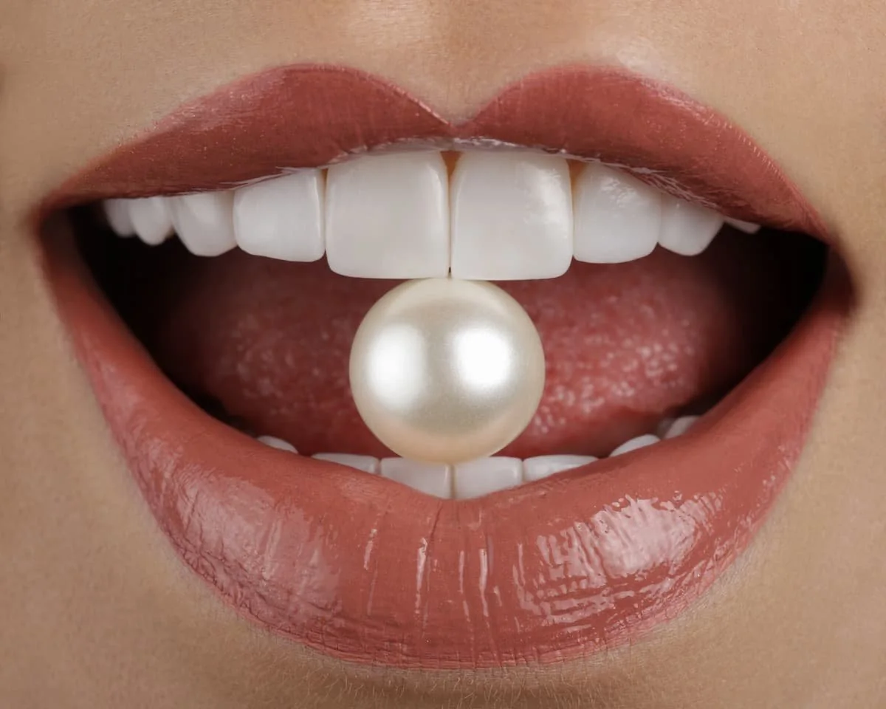
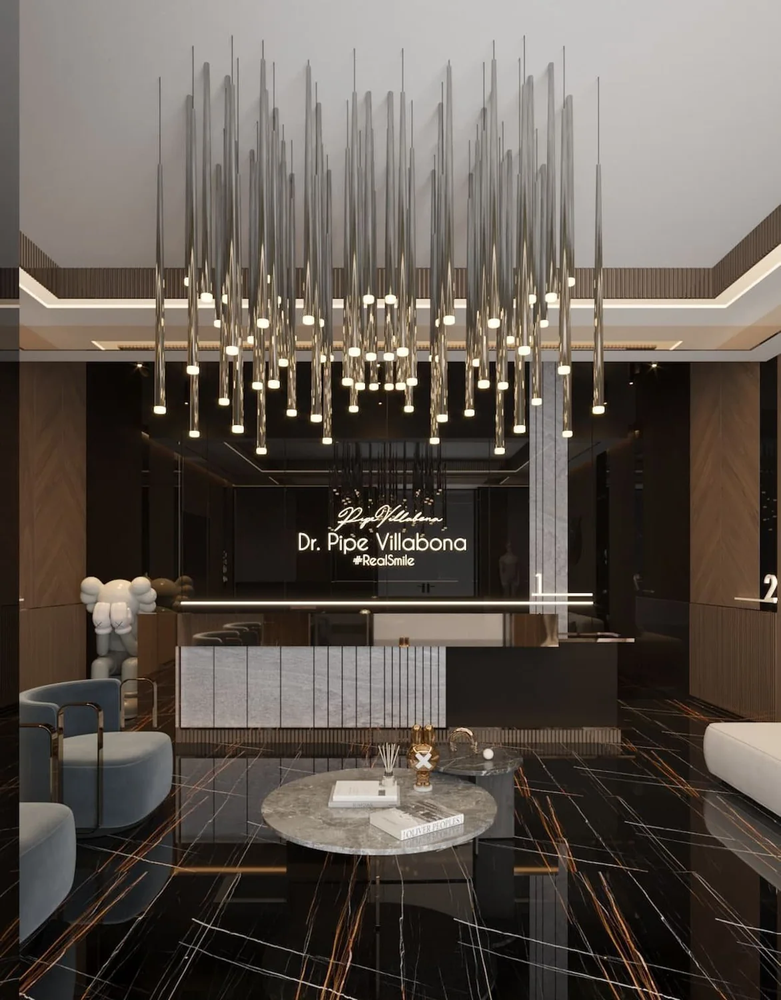

REAL
SMILE.
SMILE.

A POINT OF VIEW
Not just a smile. Your signature.
An expressive approach to smile design. A personal dental journey to Bucaramanga with Dr. Pipe Villabona.


Photographs from the credited public portfolio. Individual cases do not predict a result.
REAL SMILE®PORCELAIN. PERSONAL.
THE SMILE CONVERSATION
Porcelain smile design
Explore the aesthetic possibilities through a personalised clinical conversation.
02 / TRAVEL NOTES
Make it your journey.
USA / CANADA↘BUCARAMANGA
01 / BEFORE YOU FLY
First, we talk.
A virtual consultation is the starting point for understanding your goals and discussing a personal plan.
02 / AFTER ASSESSMENT
Then, we coordinate.
The practice presents assistance with accommodation and transport. Dates and arrangements must be confirmed with the team.
NO TRAVEL BOOKING IN THIS DEMO

SEE YOU IN COLOMBIA?
Booking preview · no real appointment is reserved.
Torre Vitro · Calle 42 #33-20 · Oficina 1005 · Bucaramanga
WhatsApp +13055886231 ↗Official practice website ↗